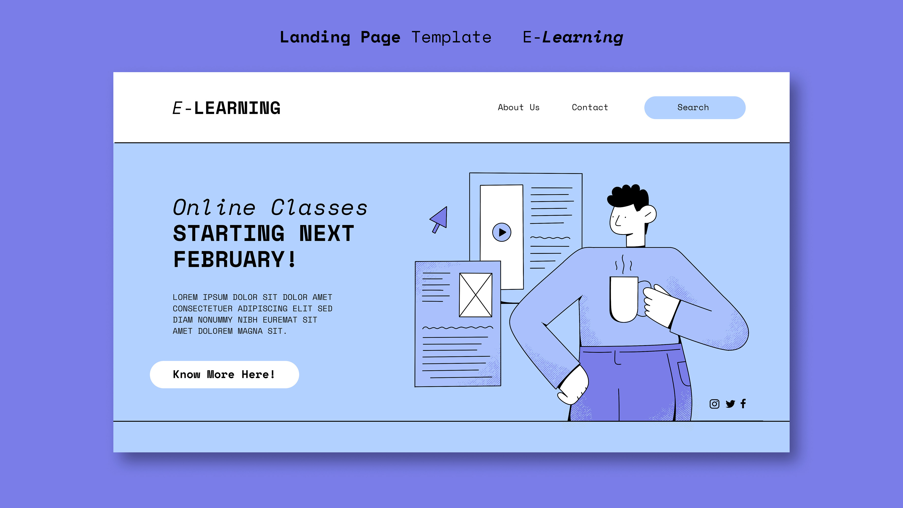

Личная карточка
Создаю проект
Презентация — важная часть проекта, которая помогает клиенту понять, что у вас в итоге получилось. Делать её в перегруженном Photoshop или Illustrator — плохая идея, так как вы потратите очень много времени на поиск нужных функций.